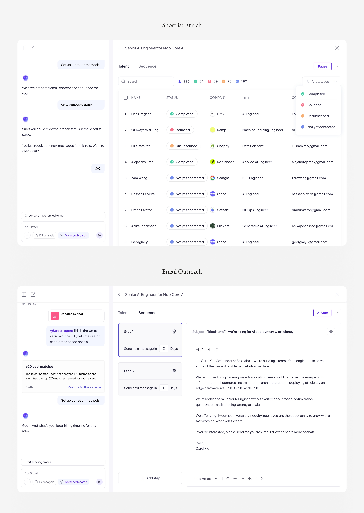

Brix AI Agentic Talent Search
Transforming traditional talent search to an agent-driven workflow that helps recruiters find ideal candidates.
An agent-driven recruiting system built for modern hiring teams.
Brix reimagines how recruiters find and evaluate candidates. Instead of manual filtering and guesswork, the system uses AI agents to define ideal candidate profiles and continuously refine search results based on recruiter feedback.
Timeline: Dec 2024 – May 2025 · Team: 2 PD, 1 PM, Engs with CEO · My role: Product Designer
Visit joinbrix.com ↗Measurable improvements across speed, funding, and recruiter confidence.
The agent-driven workflow I designed delivered meaningful results, with recruiters reporting faster decision-making and greater trust in the candidates surfaced.
Build an AI agentic talent search tool — aligning product growth with AI transformation.
The business goals were to:
- Expand the user base by positioning Talent Search as a standalone AI agent, lowering adoption barriers for recruiters and agencies while creating a path toward the full ATS and EMS suite.
- Reposition the platform as AI-native by embedding agentic workflows that improve recruiters' daily efficiency and strengthen its differentiation in the market.

How might we help recruiters efficiently define, discover, and evaluate the right candidates through an AI-driven workflow they can trust?
Through research into recruiter workflows, I identified two persistent pain points: defining what "ideal" looks like for a role is time-consuming and subjective, and existing search tools return results that require significant manual review before any action can be taken.
This created a bottleneck at both ends of the hiring process — before the search began and after results came back.

01 Hiring requirements were rigid and hard to revise once defined
Hiring requirements were treated as rigid configurations—defined through keywords, filters, or job descriptions—and became difficult to revisit or reshape once search began.
02 Outputs required constant back-and-forth
Users relied on search results to understand and refine their own thinking—turning outputs into a way to explore options.
03 Balancing automation with transparency, trust, and user control
As automation increased, users lost visibility into how decisions were made, making it harder to trust the system or actively steer the outcome.
Connecting the mapping and search agents in a continuous learning loop
I designed the two agents to work as a feedback loop: the Mapping Agent structures recruiter intent, while the Search Agent learns from results to refine future matches — together forming a definition–discovery loop that gets more accurate with each hire.
HMW use AI to help recruiters define and refine Ideal Candidate Profiles?
Recruiters often struggle to articulate exactly what they're looking for — especially early in a role definition. I designed an AI agent that could take a brief, ambiguous job description and turn it into a structured, editable Ideal Candidate Profile (ICP).
My solution: recruiters input a rough job description, and the AI agent generates a refined ICP that can be reviewed, edited, and confirmed before the search begins. This shifted the burden of structure from the recruiter to the system.

Final Design
HMW make the first candidate ranking more accurate and aligned with intent?
Early search results were often misaligned with what recruiters actually wanted — not because the data was wrong, but because intent hadn't been fully captured upfront. A single pass wasn't enough.
My solution was a feedback mechanism that lets recruiters fine-tune results before a full search runs. By rating or adjusting the initial shortlist, the agent learns what "good" looks like for this specific role and recruiter — making the comprehensive search meaningfully more accurate.

Final Design
A scalable conversational design system for agent-driven interfaces.
I needed to define how AI agents communicate, act, and deliver results — across chat primitives, structured outputs, and feedback surfaces. Rather than designing one-off components, we built a system of reusable patterns that could scale across different agent types within the product.


Deeper integration and zero-loss data migration.
The immediate next steps focus on integrating Brix with the broader product suite — including standalone ATS and EMS design — with careful attention to data migration that preserves existing recruiter workflows and history.
Longer term, the feedback loop system opens up opportunities to personalize agent behavior per organization, learning from collective hiring patterns over time.

Thoughts After Launch
01 Balancing AI Control and User Control
Effective AI support is not about making decisions for users and build user trust for automation tasks.
02 Designing for Cognitive Ease
By presenting information in scannable, familiar formats and explaining relevance clearly, the system made recruiters feel more comfortable, confident, and in control while evaluating candidates.
03 Systems Need Clear Decision Boundaries
Explicit decision boundaries reduced uncertainty, improved trust, and made the overall workflow more scalable and understandable.